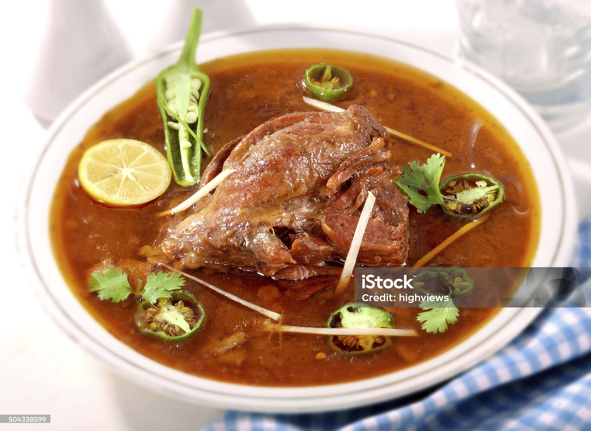

Nihari Recipe

Thick and tasty, nihari is a slow-cooked meat dish that is thickened with atta,
or durum (also called whole wheat flour made in Pakistan and India.
Although it can also be cooked with lamb, goat meat, or chicken,
Pakistani versions of nihari usually use beef.
Ingredients
- Hari elaichi (Green cardamom) 5-6
- Laung (Cloves) 5-6
- Sabut kali mirch (Black peppercorns) 1 tsp
- Badi elaichi (Black cardamom) 2
- Badiyan ka phool (Star anise) 2
- Javitri (Mace) 1 piece
- Jaifil (Nutmeg) ¼ inch piece
- Sonth (Dried ginger) 2 pieces
- Saunf (Fennel seeds) 1 & ½ tbs
- Zeera (Cumin seeds) 1 tbs
- Pipli (Long pepper) 3-4
- Tez patta (Bay leaves) 2
- Sabut dhania (Coriander seeds) 1 tbs
- Darchini (Cinnamon sticks) 2
- Ajwain (Carom seeds) ½ tsp
- Namak (Salt) 1 tsp or to taste
- Lal mirch powder (Red chilli powder) 1 tbs or to taste
- Haldi powder (Turmeric powder) 1 tsp
- Kashmiri lal mirch (Kashmiri red chilli) powder 1 tbs
- Atta (Wheat flour) 3 tsp
- prepare Beef Nihari:
- Baisan (Gram flour) 3 tbs
- Water 1 & ½ Cup or as required
- Cooking oil ½ Cup
- Beef bong (Shank) 750g
- Beef bones 250g
- Adrak lehsan paste (Ginger garlic paste) 2 tbs
- Water 2 litre or as required
- Hara dhania (Fresh coriander) chopped
- Adrak (Ginger) julienne
- Hari mirch (Green chilli) sliced
Instructions
- In a frying pan,add green cardamom,cloves,black peppercorns,black cardamom,star anise,mace, nutmeg,dried ginger,fennel seeds,cumin seeds,long pepper,bay leaves,coriander seeds,cinnamon sticks,carom seeds & dry roast on medium flame until fragrant (2 minutes) & let it cool.
- In spice mixer,add roasted spices & grind to make powder.
- Add salt,red chilli powder,turmeric powder,Kashmir red chilli powder,grind well & take out in a bowl.
- In the same frying pan,add wheat flour,gram flour & dry roast until fragrant (2 minutes) & let it cool.
- Take out in a same bowl & mix until well combined.Nihari masala is ready!
- Can be stored in an airtight jar for up to 2 weeks on counter & up to 6 months in refrigerator.
Prepare Beef Nihari:
- Add water,whisk well & set aside.
- In a pot,add cooking oil,beef shank & beef bones,mix well & cook on medium flame for 4-5 minutes.
- Add ginger garlic paste,mix well & cook for 2-3 minutes.
- Now add prepared nihari masala mixture & mix well.
- Add water,mix well & bring it to boil,cover & cook on low flame for 1 hour & 30 minutes or until meat is tender & stir in between (If required,add water).
- Turn off the flame,cover & let it rest for 10 minutes.
- Garnish with fresh coriander,ginger,green chilli & serve.